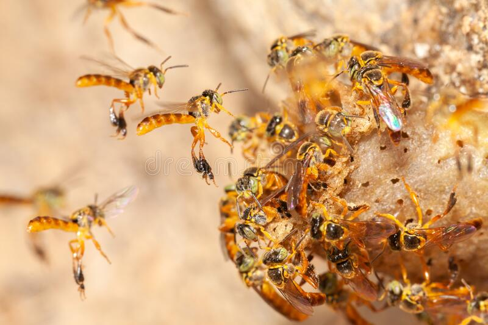
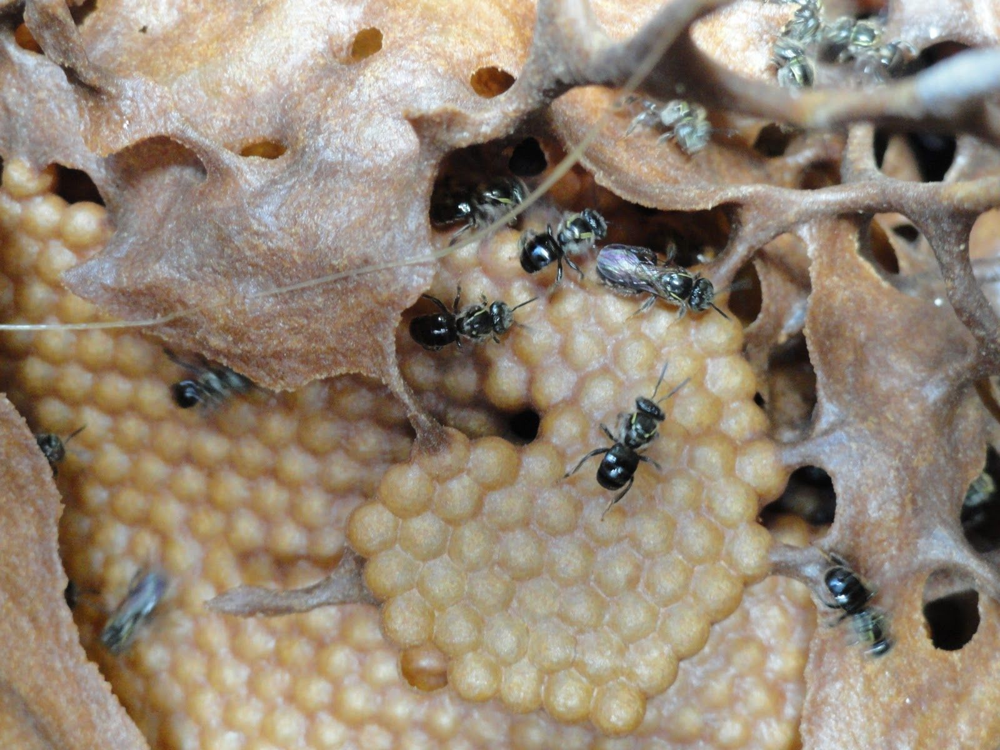
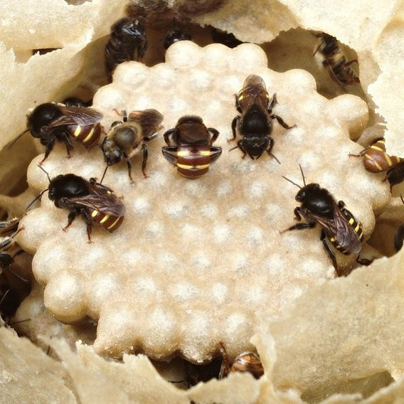
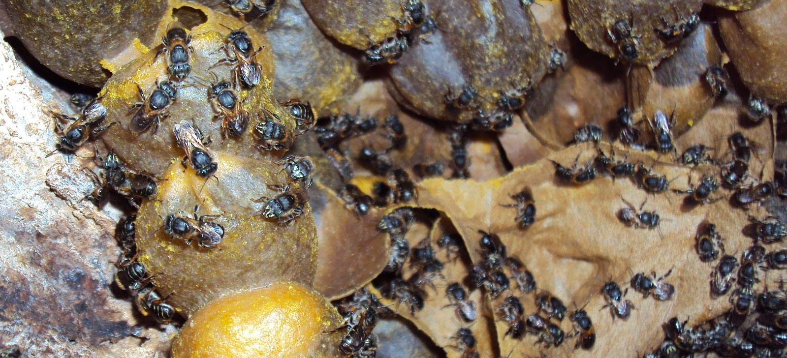
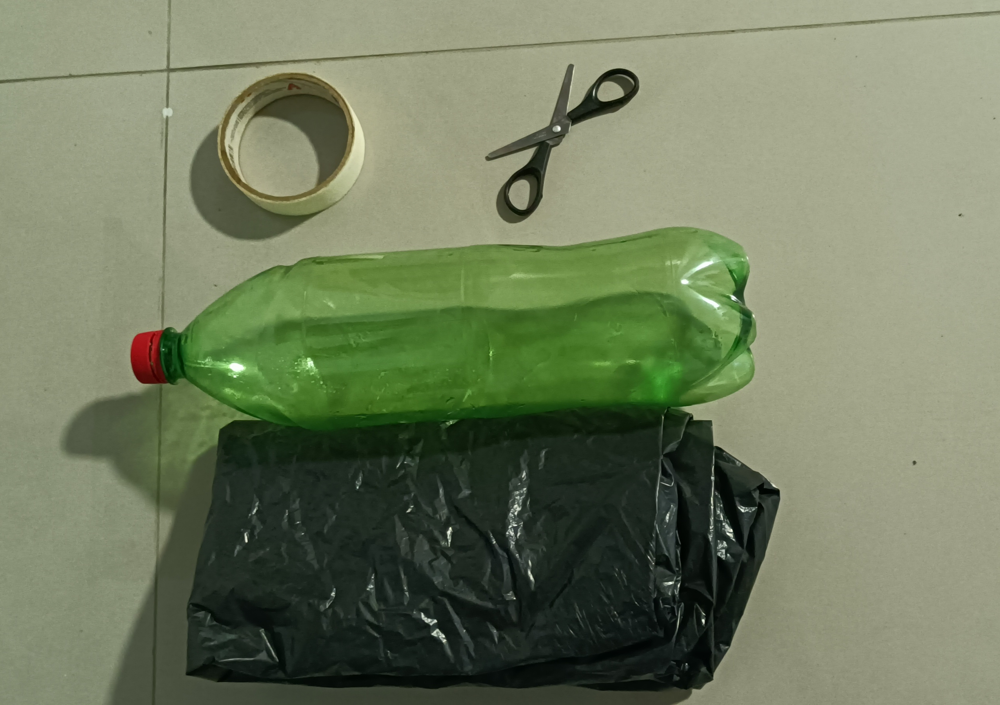
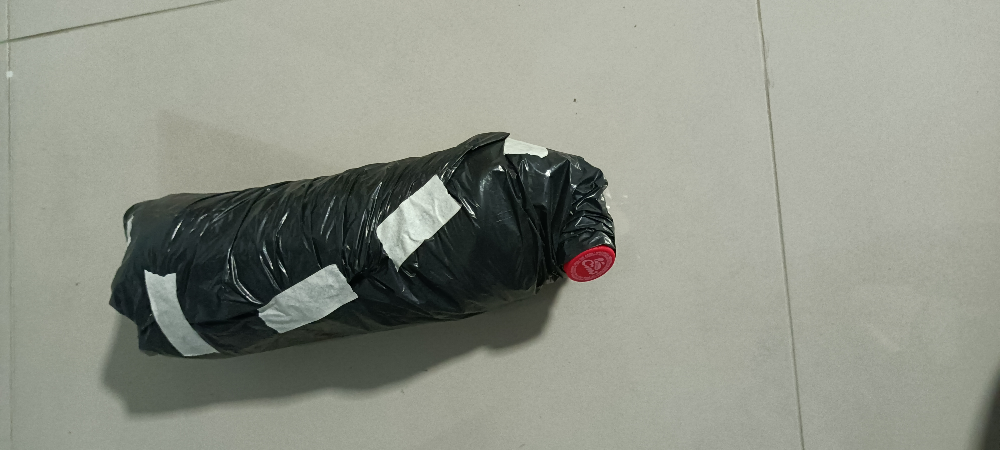
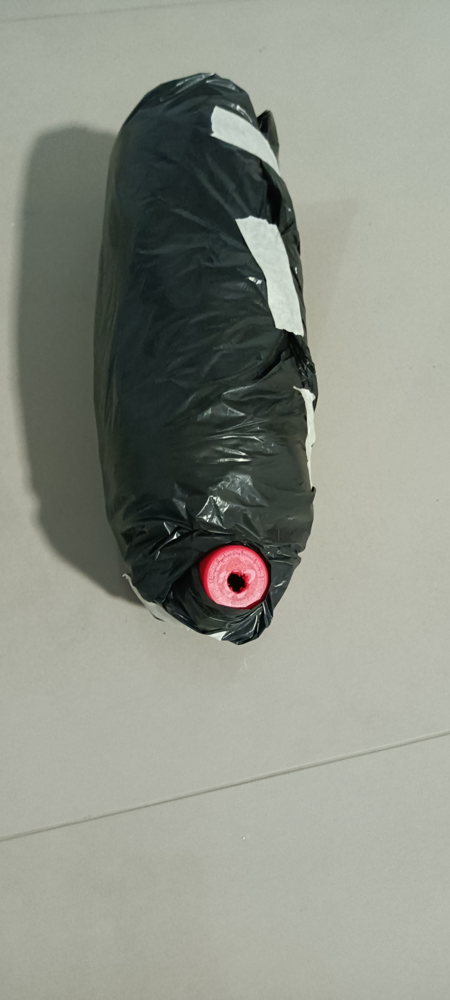
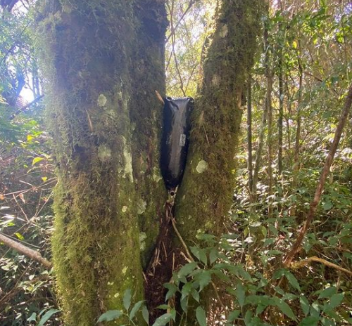

Popularmente são conhecidas por abelhas sem ferrão por não terem um ferrão como arma de defesa. Abelhas nativas sem ferrão também são chamadas de Abelhas Nativas. São excelentes polinizadoras e produzem um mel com propriedades medicinais muito valorizado no mercado.
Veja aqui algumas espécies de Meliponas do Paraná:




Muitas pessoas fazem armadilhas caseiras com garrafas pet para capturar as abelhas sem ferrão
Aqui está o passo a passo de como fazer:
Você vai precisar de:
Você vai pegar a garrafa PET e levar até o fogo para conseguir entortar o gargalo que vai servir como entrada.
Aí pega o saco plástico e enrrola na garrafa. Se você tiver jornal pode enrolar antes do plástico que vai servir para que não passe luz dentro da garrafa e para o conforto térmico do enxame.
Posteriormente, você vai furar a tampinha para entrar as abelhas.
Por fim, para que você tenha um bom resultado em suas capturas você vai precisar enxaguar o litro com um atrativo próprio.
O atrativo é uma das coisas mais importantes para obter sucesso nas capturas. Portanto você deve caprichar na confecção da loção. Pois é ele que vai atrair as abelhas para dentro da armadilha.
Vamos precisar de uma garrafa pet vazia e limpa, geoprópolis e/ou própolis e/ou cera de abelhas e o álcool*.
*A garrafa pet é o recipiente em que o geoprópolis, própolis ou a cera vão dissolver com ajuda do álcool. *O geoprópolis/própolis/cera servem para deixar o odor característico de uma colmeia de abelhas (assim atraindo as abelhas que estão procurando um novo lar). *E o álcool serve para dissolver os ingredientes. Utilize álcool 92,8, álcool de cereais ou até mesmo o Etanol. Estes três tipos de álcool funcionam muito bem.
Certamente quanto mais concentrada for a loção atrativa, melhor serão os resultados. Por isso, uma boa medida para se fazer o atrativo para as abelhas é utilizar 500 gramas de geoprópolis, própolis e cera, diluídos em 1 litro de álcool. Como foi dito anteriormente, quanto mais concentrado melhor, então nada impede de você colocar mais materiais em 1 litro de álcool.
Depois de 30 dias, a loção atrativa para abelhas nativas sem ferrão estará pronta para ser utilizada.
As iscas devem ser colocadas em lugar que simulem a enxameação natural das abelhas, ou seja, em locais calmos (de preferência sem movimentação de pessoas), ou em uma árvore de tronco grosso, há um metro de distância do chão sem incidência de sol.
A melhor época para capturar as abelhas é durante a primavera e no início do verão, período em que ocorre a enxameação (processo de divisão reprodutiva natural das colônias, em poucas palavras, a rainha, acompanhada de um número de operárias deixam seu enxame e vão em busca de um novo ninho).
